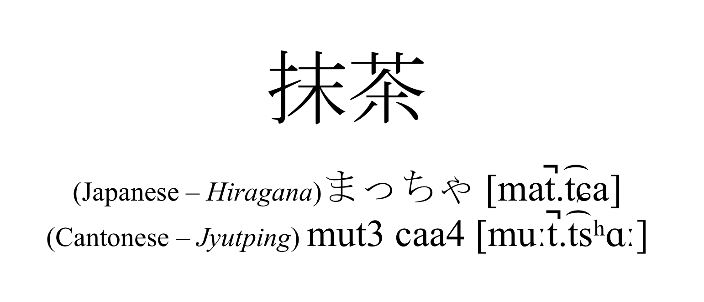

#언어이야기 6 #漢字特集 1
한자는 필자가 개인적으로 굉장히 좋아하는 언어 체계이다. (한자는 문자 체계이지만 한자의 매력은 비단 문자 그 자체에서 끝나지 않기 때문에 그냥 언어 체계라고 했다ㅎㅎ 엿장수 마음대로 언어학 용어를 쓰는 언어학 꿈나무) 그렇기에, 한자 특집 코너를 개설해 한자에 관한 흥미로운 내용을 다루는 시리즈물을 연재해볼 계획이다. 앞으로 몇 개의 한자 특집 글을 쓰게 될지는 모르겠지만 시간 될 때 열심히 써보도록 하겠다. 참고로 한자를 아예 모르는 분들을 위해: 漢字特集은 한자 특집이라고 읽는다.
스타벅스에서 음료를 시키고 카운터 앞에서 기다리는데, 옆에 설치되어 있던 배너가 눈에 들어왔다. 제주 말차로 만든 녹차 라떼를 홍보하는 배너였던 것으로 기억하는데, 영어로 'Matcha'로 적혀있었다. 멍을 때리면서 'Matcha'라는 단어를 바라보고 있었는데 갑자기 일본어 '抹茶'에서 유래했다는 것이 기억났다. 그런데, 문득 이의 광둥어 발음도 비슷하지 않을까라는 생각이 들었다.
조사해본 결과, 역시 그닥 다르지 않다! 사실 오늘의 글은 여기서 출발한다.
광둥어와 일본어, 그리고 한국어의 한자 발음들은 생각보다 비슷한 면이 굉장히 많다. 고대 중국어까지만 해도 음절 종성에 파열음이 왔다.
그런데, 고대 중국어에서 현대 북경어(엄밀히 따지면 정확하지는 않지만 이 글에서는 普通话도 ‘북경어’로 칭하겠다)로 발전하면서 coda들이 죄다 행방불명 되었다. 반면, 고대 중국어가 주변 지방/주변국(중국 남부 지방, 한국, 일본 등지)로 퍼져나가면서 일본어와 한국어, 광둥어 등의 언어에서는 한자음에 고대 coda가 그대로/조금 변형된 형태로 남아있다.
예시를 몇 개 가져와봤다.
각주 1: 日本이라는 단어의 독음은 역사적으로 /nitipoɴ/ → /nippoɴ/ → /niɸoɴ/ → /nihoɴ/ 순서대로 발달되어 왔다. /p/에서 /ɸ/, 그리고 /h/로의 자음 약화 현상은 일본어 내에서만 발생한 국지적인 발음 변화 현상이므로, 여기에서는 본래 독음인 /nippoɴ/만을 고려하였다. 참고로 자음 약화 현상은 1603년 발행된 일본어-포르투갈어 사전(日葡辞書, Vocabulário da Língua do Japão)에서日本의 독음이 nifon, nippon, iippon 총 세 가지 종류로 적혀있는 데에서 확인할 수 있다.
각주 2: IPA 표기에서 성조 표기는 모두 제외하였다.
전체적으로 보면 북경어를 제외한 모든 언어에서 공통된/비슷한 자음이 종성으로 등장함을 알 수 있다. ‘국적’에서는 연구개 파열음 /k/ 계열이 공통적으로 관찰된다. 단, 일본어 음절의 구조적 특성 상 음절의 종성에는 구개수 비음 /ɴ/이나 장음소만 올 수 있어 다른 언어에서 종성으로 관찰되는 파열음이 일본어에서는 다음 음절의 초성으로 오는 경우가 많다. ‘경찰’에서 이를 잘 관찰할 수 있는데, 광둥어나 베트남어의 치경 파열음 /t/와 한국어의 치경 설측음 /l/이 종성에서 나타나지만 일본어에서는 察의 독음이 /sa/와 /t͡sɨ/ 두 음절로 이루어져 있으며, 두 번째 음절의 초성에서 치경 파찰음 /t͡s/이 관찰되는 것이다. 그런데, ‘경찰’, ‘출발’, ‘일본’의 한국어 예시를 보면 한 가지 신기한 것을 발견할 수 있는데, 바로 광둥어와 베트남어, 일본어에서 치경 파열 또는 파찰음으로 발생되는 /t/와 /t͡s/가 한국어에서만 설측음인 /l/로 나타난다는 것이다. 이 이유는 Martin, Samuel E.의
Martin, Samuel E., How Did Korean Get -l for Middle Chinese Words Ending in -t?. Journal of East Asian Linguistics, Vol. 6, No. 3 (Jul., 1997), pp. 263.
필자는 개인적으로 이걸 읽고 정말 온몸에 소름이 돋았다. 정말 신기하다. 수능이 끝나면 꼭 정독해보고 싶은 논문이다.
몇 개의 예시만으로도 우리는 다르게만 보였던 언어들의 한자 독음 간의 놀라운 공통점을 발견할 수 있었다. 이 예시들만 가지고 독자 여러분들도 광둥어와 북경어가 분화되기 전, 한국어와 일본어, 베트남어가 중국으로부터 한자의 독음을 받아들이기 전 존재했던 몇 백 년 전 중국어가 어떤 발음 체계를 가지고 있었는지 대강 유추해볼 수 있을 것이라 생각한다. 예를 들면, 한자 察의 원래 독음은 */sat/ 비슷한 것이 아니었을까?
실제로 상고/중고 중국어(上古/中古汉语)의 한자 독음의 복원은 이런 방식으로 이루어졌고, 복원된 데이터에서 우리는 동아시아 한자권 언어들이 어떻게 발전해왔는지 그 과정을 엿볼 수 있다.
<次回漢字特集予告>
이번 글은 간단한 맛보기 수준이었다면 다음 漢字特集에서는, 이번에 살펴본 한자 발음의 역사의 전체적인 흐름을 좀 더 자세히 다뤄보고자 한다.